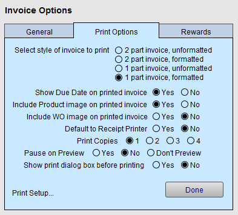

Set up Invoice Print Options
All invoices are sized for 8 1/2 x 11 paper in a vertical/portrait orientation. Samples of these forms can be printed by clicking Main Menu > Print Blank Invoice Form.
Invoice Options - Print Options Explained
-
From the Main Menu, in the Invoices section, open the Options tab.
-
Click the More Options... button.
The Invoice Options window appears. -
Open the Print Options tab.

Select style of invoice to print Radio Buttons
Choose one of the following invoice styles to meet your needs.
-
1 Part Invoice: Is a standard, clean invoice with all information printed clearly on one page of 8 1/2 x 11" paper.
-
2 Part Invoice: In order to save time and paper, FrameReady can be set up to print out a two-part form. The lower third is detached and kept by the merchant and the upper portion is given to the customer. Have perforated paper prepared for this purpose.
-
Formatted: Fills in all boxes and headings. Use this option when using regular blank paper rather than pre-printed paper (see below).
-
Unformatted: Use this option for pre-printed forms. Take one of the blank forms to a print shop and have a quantity of forms printed. Be sure to have your print shop perforate the page if using the two-part form.
Show Due Date on printed invoice Radio Buttons
-
Yes, includes the Due Date.
-
No, omits the Due Date.
Include Product Image on printed invoice Radio Buttons
-
Yes, includes the product photo from the Products file (Image tab) on the printed invoice (the correct Item # must be entered on the invoice for the image to be found).
-
No, omits the image of the product from the printed invoice.
Include WO image on printed invoice Radio Buttons
-
Yes, includes the image from the Work Order (Picture tab) on the printed invoice.
-
No, omits the image.
Default to Receipt Printer Radio Buttons
-
In some retail environments, it may be preferable to use a receipt printer instead of printing an 8 1/2 x 11 invoice.
-
Usually this scenario involves several computers running FrameReady on a network. In such situations, the computer with the receipt printer is dedicated to a sales check-out counter. An electronic cash drawer can be attached to the receipt printer and is triggered by the printing of the receipt.
Note: FrameReady only supports USB type receipt printers. Call the FrameReady Team for suggested makes and models.
Print Copies Radio Buttons
-
Select the number to indicate how many copies of the invoice will be printed.
-
Select from 1 to 4 copies.
-
For 2 or more copies, also set the Show Print Dialog Box to No (because, when the Print Dialog box appears, it uses its own default setting and not the FrameReady setting).
-
If you wish to print more than 4, then set the print dialog box to show before printing and manually select the number you need.
Pause on Preview Radio Buttons
-
Yes, allows you to review each item about to be printed. Click the Continue button to move forward.
-
No, stills show the preview but will not pause before moving forward.
-
Don't Preview, does not display a preview.
-
Also available from the Main Menu, in the Invoices' Options tab.
Show Print dialog box before printing Radio Buttons
-
Yes, opens the Print dialog box before printing. This will allow you to print more than one copy, change printers, or select special features of your printer or cancel the print job.
-
No, causes the document to be sent to the printer without any further prompts. A faster option.
-
Also available from the Main Menu, in the Invoices' Options tab.
Print Setup Button
-
Opens the print setup dialog box of your computer.
-
Select your printer and any print options to meet your hardware requirements.
See also: Setting Up a Receipt Printer
© 2023 Adatasol, Inc.